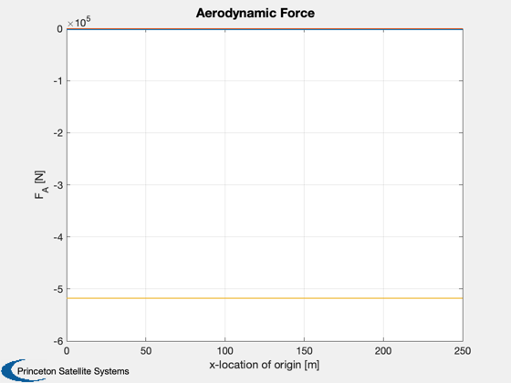
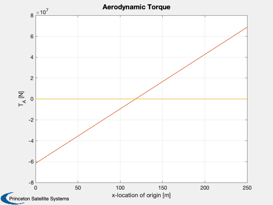

Demonstrate the AirshipAero function.
------------------------------------------------------------------------
Computes force and torque at a specified flight condition.
Computes them for a range of coordinate system locations, moving from
the nose to tail along body X axis.
------------------------------------------------------------------------
See also QECI, @acstate/acstate.m, BuildAirshipModel, ASM1,
AirshipAero, StdAtm, Plot2D
-------------------------------------------------------------------------
Contents
Demo parameters
alpha = 5*pi/180;
beta = 0;
V = 15;
w0 = [0;0;0];
alt = 21333;
elv = [0;0];
rud = [0;0];
Global for the time GUI
global simulationAction
simulationAction = ' ';
Airship data
d = BuildAirshipModel('ASM1');
array of origin locations
n = 20;
param = ASM1;
xOrig = 0:param.L/(n-1):param.L;
Control
control.throttle = 0;
control.mu = 0;
control.dELVL = elv(1);
control.dELVR = elv(2);
control.dRUDB = rud(1);
control.dRUDT = rud(2);
initial position
Re = 6378.14*1e3;
r0 = [Re+d.aero.pressureAlt;0;0];
initial velocity
ta = tan(alpha);
vx = V*cos(beta)/sqrt(1+ta^2);
vy = V*sin(beta);
vz = vx*ta;
v0 = [vx;vy;vz];
initial orientation
eulInit = [0;0;0];
q = QECI( r0, eulInit );
wR = ones(length(d.rotor),1)*5;
engine = [];
actuator = [];
sensor = [];
flex = [];
disturb = [];
atmospheric density at altitude
atmData = load('AtmData.txt');
atmAlt = StdAtm(alt,atmData,'si');
rho = atmAlt.density;
dynamic pressure
qBar = 0.5*rho*V^2;
Initialize state
x = acstate( r0, q, w0, v0, wR, d.mass, d.inertia, d.cG, engine, actuator, sensor, flex, disturb );
f = zeros(3,n);
t = zeros(3,n);
bForce = d.aero.airMass*d.mu/(r0'*r0);
disp('Computing forces and torques...');
for k = 1:n
d = BuildAirshipModel('ASM1',xOrig(k));
g = AirshipAero( alpha, beta, x, d.aero, qBar, control, flex, rho );
f(:,k) = g.force;
t(:,k) = g.torque;
end
f = f(:,1:k);
t = t(:,1:k);
x = xOrig;
Plot2D( xOrig, f, 'x-location of origin [m]', 'F_A [N]', 'Aerodynamic Force' )
Plot2D( xOrig, t, 'x-location of origin [m]', 'T_A [N]', 'Aerodynamic Torque' )
Computing forces and torques...
 